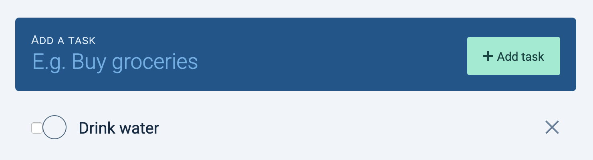
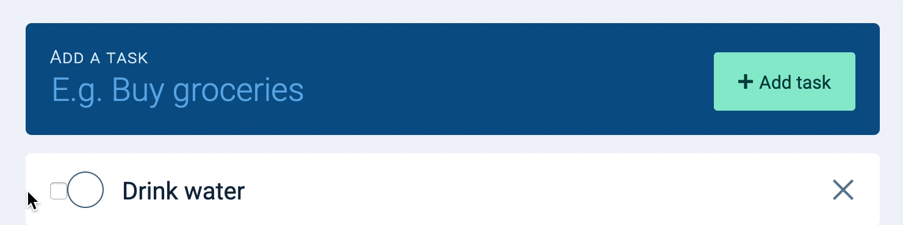
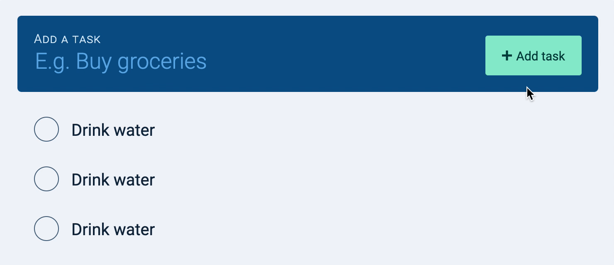
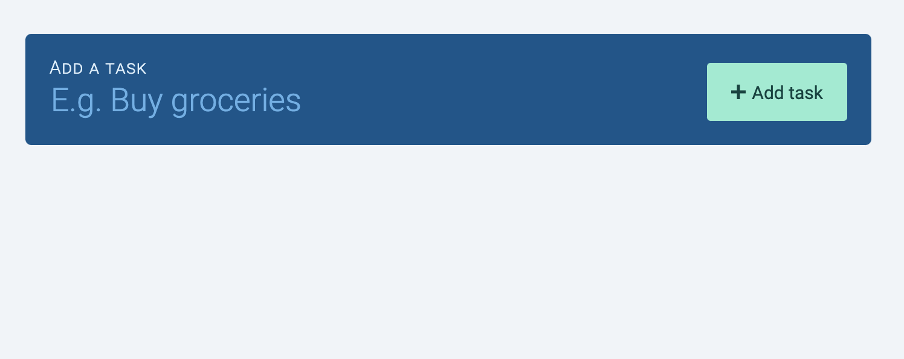
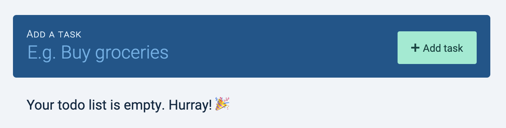

Next, we want to style the checkbox to fit our design.
Unfortunately, browsers make it hard for us to style <input> elements. We will create a <label> element after the <input>, and we’ll style the <label> instead.
I went ahead and styled the label according to the design, so this is what you should see at this point:

When the checkbox is checked, we want to use style the label so it is checked. We can use the same :checked and + trick we used earlier to create this effect.
/* Note: This is already styled for you in the Starter CSS file */
input[type="checkbox"]:checked + label {
/* Check the label */
}
You should get this effect:
When you check the checkbox, the label should get checked.
When you uncheck the checkbox, the label should get unchecked.
When you check the label, the checkbox should get checked.
When you uncheck the label, the checkbox should get unchecked.

Notice the strikeout style didn’t apply to .task__name anymore? This happens because we added <label> between our checkbox and .task__name. The :checked and + trick doesn’t work anymore.
To fix the strikeout style, we can use the general-sibling combinator (~). ~ works like +, but it applies to any sibling that comes after the first selector.
We want to hide the button to delete a task at first. This reduces things we place on the UI (and hence reduces cognitive load).
We only want to show the delete button when a user hovers over the task. We can change its opacity to do this.
.task__delete-button {
opacity: 0;
}
/* This one is done for you */
.task:hover .task__delete-button {
opacity: 1;
}

Now there’s one thing left to do.
Making the empty state
What happens when there are no tasks? Try deleting the tasks you created. This is what you’ll see.

A user who stumbles onto this empty Todolist may not know they can create tasks with the new task form. We can make it clearer to them with some text that says the Todolist is empty.

To build this empty state, we add an extra <div> after .tasks.
<form action="#" class="todolist" autocomplete="off">
<div class="todolist__new-task"> ... </div>
<ul class="todolist__tasks"> ... </ul>
<div class="todolist__empty-state">Your todo list is empty. Hurray! 🎉</div>
</form>
We want to display .todolist__empty-state only when there are no tasks in .tasks. We can do this with the :empty pseudo-class.
.tasks + div {
display: none;
}
.tasks:empty + div {
display: block;
}
Note: :empty only works if the .tasks is really empty. This means the <ul> element cannot contain any whitespaces, like this:
<ul class="todo"></ul>
<div>
<p>Your task list is empty. Hurray! 🎉</p>
</div>
Try removing the whitespaces manually from the HTML. You should be able to get this to work.